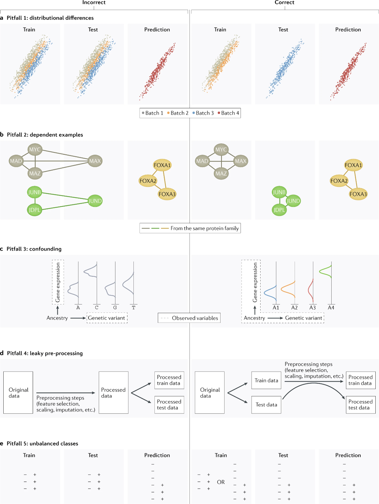

8 Pitfalls overview
Applying machine learning in the field of genomics comes with its own challenges. Genomic data is highly complex, featuring high dimensionality, heterogeneity, and noise. It is important to consider the assumptions models make and whether those assumptions hold true within the data. According to research, available here from Whalen et. al., on the pitfalls in machine learning, the most common errors include not taking into account distributional differences between contexts or batches, dependencies within the data, confounding effects distorting true relationships, unbalanced classes and leaking information between datasets.50 These pitfalls are interconnected where falling into one likely means falling into several. For example leaky preprocessing practices may result in introducing confounding effects. Lets examine the pitfalls mentioned in the research above and methods to mitigate these effects in more detail.
Source: Nature Reviews Genetics
Distributional differences
Whalen et. al. discuss the issues that arise when distributions between experiments or batches differ. The example given for distributional differences between experiments involves understanding transcription factor binding sites using experiment data from in vitro assays (out of cell) versus in vivo assays (in cell). The context in which either experiment was conducted is different introducing unique biases. Training models in one context can perform well within the same context, but performance drops when tested/predicting in the other context. This can also be true when predicting across species. The authors note this is not inherently a bad thing as the differences in distributions can be studied to reveal biological insights. It is important to keep this in mind when attempting to predict across contexts.
Distributional differences between batches can occur due to noise or other factors introduced by the specific experiment design. The key point Whalen et. al. conveys as seen in figure 2.9, is in order to train models that generalise well, test sets must be from different batches as to separate these potential distributional differences. Otherwise, test performance will be artificially inflated. Additionally, applying batch effect correction techniques such can help account for these distributional differences.
Dependent examples
Genomics contains many biological dependencies. The main issue arises when data in test sets are correlated or dependent on data in training sets or vice versa. Predictions become easier as the model learns the correlation between dependencies versus the underlying biological factors. The example given by Whalen et. al. argues that a model predicting protein interactions would have an inflated test performance learning dependencies between proteins present in both the training and test set versus novel proteins.
Another genomic example of problematic dependency comes from a research paper focused on understanding the pitfalls of neural networks predicting across cell types51. They found that several models had been evaluated on test sets comprising of a cell type independent of training, but not independent of chromosomes, leading to inflated performances. That is, gene expression predictions were evaluated on different cells but on the same chromosomes. The inflated performances were due to the general expression levels of test chromosomes being similar across cells. The correct way to evaluate the model’s performance would be to test it on a different cell type and chromosome than it was trained on.
Confounding
Confounders are additional variables that affect the variables being studied, resulting in models not capturing the correct relationships in the data.52 According to Whalen et. al. confounders in genomics can come from various factors such as unmodelled environmental factors or population structures in genome wide association studies, with the problem being models learning an association between the outcome and features that is actually driven by a confounding variable but interpreted as a biological insight.
In the context of ATAC-Seq and chIP-Seq data, differences in the sequencing depth of the experiment can have a confounding effect on models if not handled. As explained in section 2.2.1, ATAC-Seq and chIP-Seq data consists of reads that are aligned to a reference genome and aggregated. The sequencing depth of the experiment refers to on average how many times a region was sequenced53. A higher sequencing depth means a higher overall coverage level. If not accounted for, models using data of different sequencing depths are confounded. Similarly when predicting on a dataset with a different sequencing depth than the training set, the model would biased. While sequencing depth as a confounder can be more easily corrected by downsampling the raw reads from the dataset with higher sequencing depth, other confounding effects can be harder to account for. However, it is possible to use statistical tools such as PEER54, Inter-sample Correlation Emended (ICE) and Surrogate Variable Analysis (SVA)55 to understand confounders in your dataset.
Leaky pre-processing
Leaky preprocessing involves information leaks between the training and test sets resulting in altered testing metrics. Pre-processing steps involving the dataset as a whole can introduce dependency. This includes standardisation techniques, supervised feature selection or principle component analysis, before splitting data into test splits. It is ideal to perform these transformations and analysis after data splits or within cross-validation. Whalen et. al. states that leaky preprocessing has been prevalent in various genomic fields, including microarray analysis, DNA methylation, gene expression studies, and more, often leading to misleading results.
Unbalanced classes
Unbalanced datasets can be common in genomics often necessitating the use of statistical methods to validate the few positive instances amid vast amounts of data. In these cases, the pitfall is a model “learns most of the target concepts of the majority class and learns target concepts from the minority class poorly or not at all.”56 This is particularly evident in disease related tasks where the focus is on a few disease causing genes or non-coding variants.57 Additionally, many experiments that implement conservative significance thresholds to determine true signals involve data imbalance, such as peak detection58, gene expression59, and chromatin accessibility. The extensive size of the human genome exacerbates this issue when the areas of interest are small. Researchers address this imbalance by employing balancing algorithms that oversample the negative class and undersample the majority class. For instance, in training models to predict functional peaks from ChIP-seq or chromatin accessibility data, an approach might involve using all identified peaks along with a matching number of negative regions, thus effectively undersampling the majority class. For datasets with no such negative regions, researchers have to construct their own. While such imbalances are commonly discussed in classification, they also pose challenges in regression models predicting quantitative outcomes, where performance may be compromised in regions with sparse data, such as genomic areas or genes with low read counts in single-cell genomics studies.60
In Tutorial 1, we utilised thresholding to filter our data to focus on regions with significant coverage. While there were around 300,000 bins across the three chromosomes we looked at, after thresholding our data consisted of roughly 10% or 30,000 bins. Our data does not contain any coverage values below the threshold. In the next tutorials, we will explore how a model performs with and without regions of zero signal.
More general methods for dealing with class imbalances:
Scikit-learn’s ‘imbalance-learn’ package (Oversampling, Undersampling and Weighting)
“Imbalanced-learn (imported as imblearn) is an open source, MIT-licensed library relying on scikit-learn (imported as sklearn) and provides tools when dealing with classification with imbalanced classes.”SMOTE (Oversampling)
“a random example from the minority class is first chosen. Then k of the nearest neighbors for that example are found (typically k=5). A randomly selected neighbor is chosen and a synthetic example is created at a randomly selected point between the two examples in feature space.”ADASYN (Oversampling)
“similar to SMOTE but it generates different number of samples depending on an estimate of the local distribution of the class to be oversampled.”